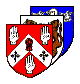

| Follow the above link to the Upton Protestation page or click the graphic below to visit the Homepage. |
 | Protestation Return Cromwell, Nottinghamshire 1642 Jim Cullen |
Cromwell. The inhabitants hereof tooke the Protestation March the 5th none refuseing beeing 18 yeares of age or above. Willm Benton Tho: Cursomme Rob: Johnson Rob: Bird Rob: Brookes Math: Moore James Moore Willm Whitton Willm Gilbert Geo: Stoumer Rich Stoumer John Tiffin Tho: Jackeson Geo: Peareson John Archer Rich Blonke Rob: Jackeson Rob: Standish Rich Jenkinson Rob: Autumme Wm Jenkinson John Dawson Wm Hettinner Wm Smeeton Tho: Hewett Randle Morton Wm Henson Wm Henson Jnr Rich: Skelton Paul Norman Ed: Hibbeard Ed: Linsdale Ed: Bee Wm Sturtevant Wm Sarneton John: Cartwright Tho: Elliott Wm Clarke Miles Moumford Source Reference: YHL/PO/JO/10/1/101/81, Protestation Return: Nottinghamshire: Thurgarton Hundred – Cromwell Original record obtained from The National Archives UK |